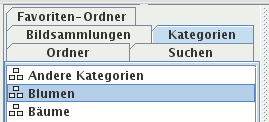

Im Kartenreiter Kategorien sehen Sie alle Kategorien, die Sie in die XMP-Metadaten eingaben.

Klicken Sie mit der linken Maustaste auf eine Kategorie, werden in der Fenstermitte alle Bilder mit dieser Kategorie angezeigt. Es gibt kein Kontextmenü für Kategorien.